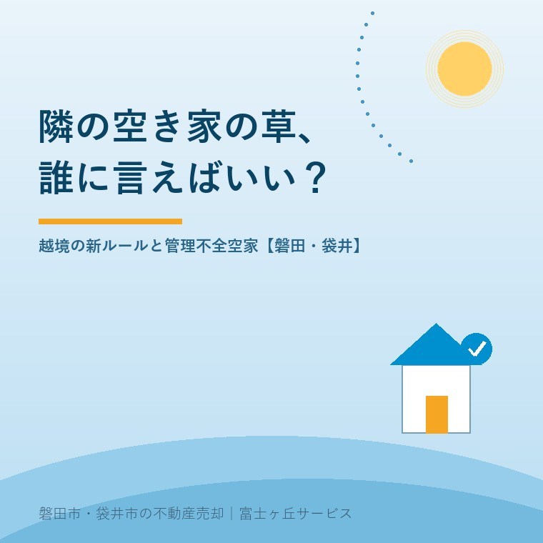

2026年7月28日｜カテゴリ：空き家管理・近隣トラブル・行政

この記事の要点
Q. 隣の空き家の草や木の枝が、うちの庭まで伸びてきた。誰に言えばいい？
A. まずは空き家の所有者に連絡し、分からなければ市の空き家窓口（磐田市は建築住宅課、袋井市はふくろいすまいの相談センター）に情報提供するのが基本の順番です。2023年の民法改正で、催告しても切ってもらえない越境した枝は、一定の要件のもと自分で切除できるようになりました。逆に所有者側も、放置すれば「管理不全空家」として勧告を受け、固定資産税の軽減が外れることがあります。磐田市・袋井市では、介護施設の運営から不動産事業を始めた富士ヶ丘サービスのような「介護×不動産」専門の会社に、管理や手放し方を相談するという選択肢があります。
毎年7〜8月、不動産の現場に増えるご相談があります。「隣の空き家の草がうちの庭まで入ってきた」「枝が屋根にかかっている」「軒下に蜂の巣ができて危ない」──夏は草木が一気に伸び、お盆の帰省で久しぶりに実家周りを見る人も増えるため、空き家の苦情がもっとも集中する季節です。今日は、言う側（お隣さん）の正しい手順と、言われる側（空き家の所有者）への処方箋を、両方の立場から整理します。
隣の草木に困ったとき、いきなり市役所に電話される方が多いのですが、私有地の草木は原則として所有者にしか手を付けられません。順番としては次が近道です。
| 市 | 空き家の相談・情報提供の窓口 |
|---|---|
| 磐田市 | 建築住宅課（西庁舎2階）／空き家の適切な管理に関する相談 TEL 0538-37-2706（危険空き家は住宅管理グループ TEL 0538-37-4851） |
| 袋井市 | ふくろいすまいの相談センター（袋井260-1）TEL 0538-44-3321（火・水・木・土 8:30〜17:15） |
「越境してきた枝を勝手に切ってはいけない」──これは長く民法の原則でした（根は昔から自分で切り取れます）。2023年4月施行の民法233条の改正で、原則は維持しつつ、次の場合には越境された側が自分で枝を切り取れるようになりました。
切除にかかった費用は、基本的に竹木の所有者に請求できると考えられています。ただし、いきなり切るのはNGで、催告の記録（手紙の控え・写真・日付）を残して手順を踏むことが大切です。高木の伐採は危険も伴うため、実行する場合も業者への依頼と、トラブル防止のため事前に市や専門家（弁護士等）への相談をおすすめします。
今度は所有者側の話です。遠方に住んでいて、実家の草が伸びていることに気づいていない方も多いのですが、近隣からの苦情を放置すると、いまは行政の対応が段階的に強くなります。2023年12月施行の空家法（空家等対策特別措置法）改正で、倒壊寸前の「特定空家」の手前に「管理不全空家」という区分が新設されました。
| 段階 | 何が起きるか |
|---|---|
| 管理不全空家に該当（窓の破損・草木の繁茂など管理が行き届かない状態） | 市から指導。改善されないと勧告 |
| 勧告を受ける | 住宅用地特例（土地の固定資産税の軽減）が解除され、土地の固定資産税がおおむね3〜4倍に |
| 特定空家に該当・命令違反 | 命令・過料、行政代執行（解体等の費用は所有者から徴収） |
つまり、「草くらいで」と放置していると、税負担の増加という形で確実に自分に返ってくる制度になっています。また、伸びた枝や傷んだ塀が隣家や通行人に被害を与えれば、所有者は工作物責任（民法717条）で賠償責任を負います。空き家の火災保険の記事で解説したとおり、保険の備えとセットで考えてください。
処方箋はシンプルです。①年2〜3回（梅雨前・夏・秋）の草刈りと剪定を習慣にする、②自分で通えないならシルバー人材センターや管理サービスに依頼する、③苦情の連絡が来たら放置せず、まず現地を確認してお隣に一言伝える──「連絡がつく所有者」であるだけで、近隣トラブルの9割は防げます。
磐田市・袋井市の空き家は敷地が広く、草刈りを業者に頼むと1回あたり数万円かかることも珍しくありません。年2〜3回×数万円を毎年払い続け、固定資産税と保険料も負担し、それでも誰も住む予定がない──そんな状態なら、「管理し続ける」から「動かす（売る・貸す・解体する）」への切り替えを考える時期かもしれません。磐田市には危険空き家の解体費用の助成制度もあり、状態が悪化しきる前のほうが、選べる道は多く残っています。
当社は介護施設の運営から不動産事業を始めた会社として、施設入居や相続で空き家になった実家の管理・近隣対応・売却や活用の検討を、ひとつのテーブルでご相談いただけます。遠方にお住まいで現地を見に行けない方の「まず現状を知りたい」にも、地域密着でお応えします。
富士ヶ丘サービスは、磐田市・袋井市に特化した地域密着の会社として、「高く売る」だけでなく「ご近所と家族が困らない空き家のしまい方」を大切にしています。管理にお悩みの空き家のご相談は実家じまい相談室へどうぞ。
ふじがおか実家カルテ｜「管理し続けるか、動かすか」の判断材料に
維持費・売りやすさ・支障の有無。空き家の現状を、まず1冊に。
登記情報と固定資産税通知書から、名義・道路・農地・建物の状態を宅建士が机上で確認し、持ち続けた場合の費用感と売却の見通しを整理してお渡しします。遠方の方もオンライン・郵送で完結できます。
本記事は2026年7月28日時点の情報をもとに作成しています。窓口の名称・電話番号・受付時間は変更されることがあります。越境した枝の切除など個別の法的判断は弁護士へ、固定資産税の取り扱いは市の資産税担当へご確認ください。
磐田市・袋井市の実家じまい・相続空き家相談
固定資産税通知書だけでも相談できます
住所があいまいでも、通知書や写真から名義・道路・農地・残置物の確認順を整理します。カルテ申込またはLINEで状況を送ってください。
富士ヶ丘サービス株式会社／静岡県磐田市見付5789番地1／TEL:0538-31-3308／静岡県知事 (2) 第14083号／代表取締役・宅地建物取引士 大石 浩之